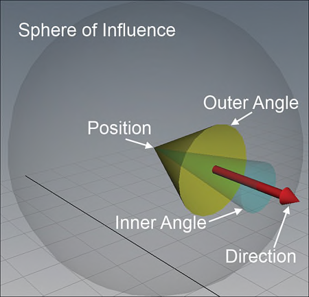
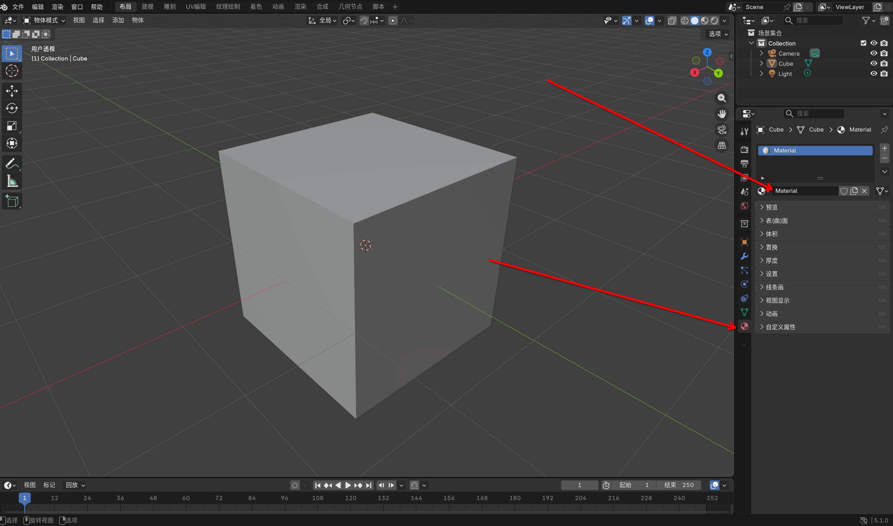
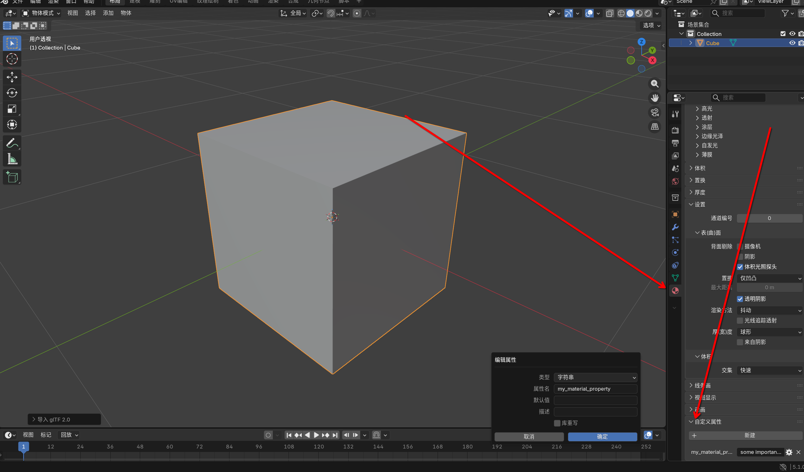
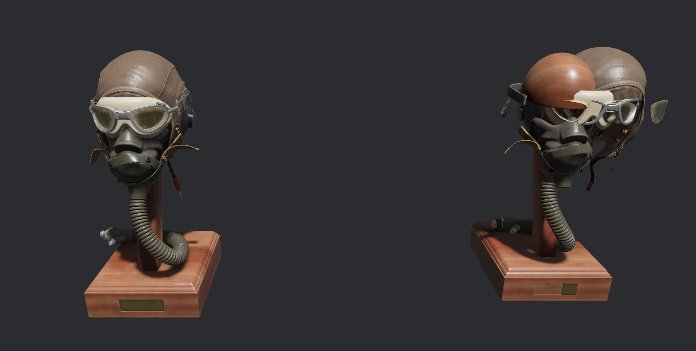
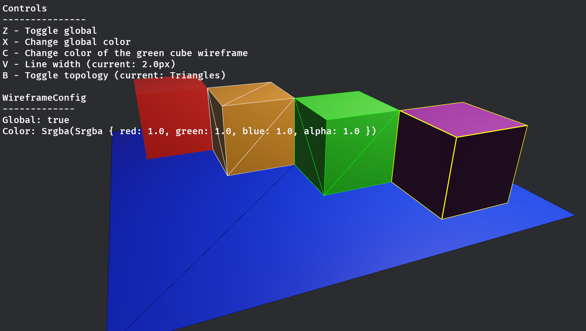

本章节的主要内容在于对3D世界有一个一般的了解，由于3D部分过于复杂，大量的细节都将在后续章节中进行更为详细的讲解。
8.1 Light
“上帝说：要有光，就有了光。”我们的三维世界也需要有光，否则渲染出来的屏幕将会漆黑一片。有关灯光的介绍是一个大主题，甚至能够写好几本书，在这里我们只会简要的介绍一下几种常见的灯光，以便我们能够首先看到点什么，剩下的内容将会在下一章内更仔细的介绍。
8.1.1 PointLight
PointLight是一种从中心点开始向各个方向发光的光源，其结构体定义如下。我们现在主要关心的是color、intensity、range、radius这几个参数。他们分别设定了光源的颜色、强度、范围、光点半径。
#![allow(unused)]
fn main() {
pub struct PointLight {
pub color: Color,
pub intensity: f32,
pub range: f32,
pub radius: f32,
pub shadows_enabled: bool,
pub soft_shadows_enabled: bool,
pub affects_lightmapped_mesh_diffuse: bool,
pub shadow_depth_bias: f32,
pub shadow_normal_bias: f32,
pub shadow_map_near_z: f32,
}
}8.1.2 SpotLight
SpotLight是一种从某个点朝着某个方向发射的光源，一般也叫聚光灯，形状是一个从源点沿着方向为轴线的锥形，其结构体定义如下。除了color、intensity、range、radius等参数，我们还需要关心inner_angle和outer_angle这两个参数，
#![allow(unused)]
fn main() {
pub struct SpotLight {
pub color: Color,
pub intensity: f32,
pub range: f32,
pub radius: f32,
pub shadows_enabled: bool,
pub soft_shadows_enabled: bool,
pub affects_lightmapped_mesh_diffuse: bool,
pub shadow_depth_bias: f32,
pub shadow_normal_bias: f32,
pub shadow_map_near_z: f32,
pub outer_angle: f32,
pub inner_angle: f32,
}
}这两个参数是两个角度，范围应该在0～90度之间，且inner_angle应当小于outer_angle，这两个参数看起来就像下面这样。outer_angle指定了聚光灯的范围，而位于inner_angle和outer_angle之间的光强度将会逐渐减小来呈现一种边缘的光更弱的效果。

要使用SpotLight光指定SpotLight是不够的，我们还必须指定他的Position和Direction才行，但是定义中并没有提供我们相关的设置，我们要怎么办呢？当然，使用Transform即可。因此想要使用聚光灯，就要像下面这样，利用Transform组件来指定原点和方向。
#![allow(unused)]
fn main() {
commands.spawn((
SpotLight {
intensity: 100_000.0,
color: LIME.into(),
shadows_enabled: true,
inner_angle: 0.6,
outer_angle: 0.8,
..default()
},
Transform::from_xyz(-1.0, 2.0, 0.0).looking_at(Vec3::new(-1.0, 0.0, 0.0), Vec3::Z),
));
}8.1.3 DirectionalLight
DirectionalLight意为平行光，是一种理想的现实里不存在的光源，我们的太阳光也可以视为这种光源。这种光源的光线不像SpotLight或者PointLight那样由一个点发出，而是由一个平面发出，就好像由一组光源列阵一样。
illuminance参数指定了照明的强度，但是这个单位与intensity不同。intensity以lumens（流明）为单位，而illuminance以lux（每平方米的流明）为单位。
#![allow(unused)]
fn main() {
pub struct DirectionalLight {
pub color: Color,
pub illuminance: f32,
pub shadows_enabled: bool,
pub soft_shadow_size: Option<f32>,
pub affects_lightmapped_mesh_diffuse: bool,
pub shadow_depth_bias: f32,
pub shadow_normal_bias: f32,
}
}8.2 Mesh3d
同Mesh2d一样，Mesh3d是我们用来表示一个三维网格模型的组件，其用法与Mesh2d也相同：传入一个Mesh的Handler。因此我们可以像下面的代码一样，创建一些内置的Mesh并添加到Mesh资产中，然后使用Mesh3d和MeshMaterial3d来显示这些物体。
同时，别忘了指定灯光和相机，否则我们的屏幕上将会一片漆黑。
#![allow(unused)]
fn main() {
fn setup(
mut commands: Commands,
mut meshes: ResMut<Assets<Mesh>>,
mut images: ResMut<Assets<Image>>,
mut materials: ResMut<Assets<StandardMaterial>>,
) {
//创建一些基础的材质，不然无法显示我们的形状
let debug_material = materials.add(StandardMaterial {
base_color_texture: Some(images.add(uv_debug_texture())),
..default()
});
let shapes = [
meshes.add(Cuboid::default()),
meshes.add(Tetrahedron::default()),
meshes.add(Capsule3d::default()),
meshes.add(Torus::default()),
meshes.add(Cylinder::default()),
meshes.add(Cone::default()),
meshes.add(ConicalFrustum::default()),
meshes.add(Sphere::default().mesh().ico(5).unwrap()),
meshes.add(Sphere::default().mesh().uv(32, 18)),
meshes.add(Segment3d::default()),
meshes.add(Polyline3d::new(vec![
Vec3::new(-0.5, 0.0, 0.0),
Vec3::new(0.5, 0.0, 0.0),
Vec3::new(0.0, 0.5, 0.0),
])),
];
let num_shapes = shapes.len();
for (i, shape) in shapes.into_iter().enumerate() {
commands.spawn((
Mesh3d(shape),
MeshMaterial3d(debug_material.clone()),
Transform::from_xyz(
-SHAPES_X_EXTENT / 2. + i as f32 / (num_shapes - 1) as f32 * SHAPES_X_EXTENT,
2.0,
Z_EXTENT / 2.,
)
.with_rotation(Quat::from_rotation_x(-PI / 4.)),
Shape,
));
}
commands.spawn((
PointLight {
shadows_enabled: true,
intensity: 10_000_000.,
range: 100.0,
shadow_depth_bias: 0.2,
..default()
},
Transform::from_xyz(8.0, 16.0, 8.0),
));
commands.spawn((
Camera3d::default(),
Transform::from_xyz(0.0, 7., 14.0).looking_at(Vec3::new(0., 1., 0.), Vec3::Y),
));
}
}8.2.1 加载glb/glTF
既然这一章讲得是3D，那么我们必须先好好讲明白如何把我们在blender中建模好的模型加载进bevy里并显示。bevy中的模型加载非常简单，但是也有些许的独特。
在bevy中， glb和glTF文件是一等公民，虽然bevy也支持加载obj或者其他格式的模型，但是bevy对于glb和glTF的支持是最好的。这其中涉及到很多复杂的原因，但是，如果你的模型不是glb格式的，你可以现在blender里将其重新导出为glb模型，或者你也可以使用bevy_obj等crate直接加载obj模型。
简单来说，GLB 是 GLTF 的二进制（Binary）版本，他们都通过bevy_gltf这个crate来进行加载。
glTF通常是一个 .gltf 文件（一般是JSON 格式），旁边带着一堆些.bin 文件（存储顶点、几何数据的二进制包）和一堆 .png/.jpg 图片。其存储方式是按照类别来分类存储的（如下方表格所示）。
glb只有一个单独的 .glb 文件。它把 JSON 说明书、二进制数据、贴图全部塞进了一个大包里，因为是全二进制存储，且省去了 Base64 编码的开销，通常比散装的 glTF 更小，而且加载更快，因此更推荐使用glb格式。
模型一般约定放在asset/models文件夹下。因此，我们可以这样来加载模型。那么，下面的SceneRoot和GltfAssetLabel又是什么呢？简单来说，SceneRoot只是一个特殊的组件，代表了我们在使用 blender建模时的场景根，GltfAssetLabel则代表了各种可能的glb规范里的类型。
#![allow(unused)]
fn main() {
fn spawn_gltf(mut commands: Commands, asset_server: Res<AssetServer>) {
let gltf_scene: Handle<Scene> = asset_server.load(GltfAssetLabel::Scene(0).from_asset("models/FlightHelmet/FlightHelmet.gltf"));
//或者，我们可以使用这种带后戳的格式化字符串
//let gltf_scene: Handle<Scene> = asset_server.load(format!("models/FlightHelmet/FlightHelmet.gltf#{}", GltfAssetLabel::Scene(0)));
commands.spawn((
SceneRoot(gltf_scene),
Transform::from_xyz(2.0, 0.0, -5.0),
));
}
}查看定义，可以看到GltfAssetLabel是一个枚举类型，其定义如下。这个枚举 GltfAssetLabel 实际上是 Bevy 为 glb/gltf 文件定义的**“内部地址薄”**。
#![allow(unused)]
fn main() {
pub enum GltfAssetLabel {
Scene(usize),
Node(usize),
Mesh(usize),
Primitive {
mesh: usize,
primitive: usize,
},
MorphTarget {
mesh: usize,
primitive: usize,
},
Texture(usize),
Material {
index: usize,
is_scale_inverted: bool,
},
DefaultMaterial,
Animation(usize),
Skin(usize),
InverseBindMatrices(usize),
}
}在这里，我们给出每一种类型在glTF规范中对应的部分，可以看到这个枚举里的每一个字段，都对应了glTF其中的一个标准。当我们加载后，我们便可以更改这些配置，来达到在游戏中变化的效果。
| 名称 | 对应 |
|---|---|
| Scene | GLTF 里的场景 ，一个 GLTF 可以包含多个场景（例如一个文件里存了“白天”和“黑夜”两个版本的布局）。通常我们用 Scene(0)，它会包含模型的所有层级、灯光和初始位置还有所有的模型 |
| Node | 场景树的骨架。每个节点都有自己的 Transform（平移、旋转、缩放）。你可以通过索引单独加载某个节点 |
| Mesh | 对应网格，GLTF 里的 Mesh 并不直接包含顶点，它是一个容器 |
| Primitive | 一个 Mesh 可以由多个 Primitive 组成（例如一个角色的 Mesh，手是一个 Primitive，身体是另一个，因为它们可能使用不同的材质） |
| MorphTarget | 对应形态键，用于做面部表情或简单的形变动画（比如捏脸系统） |
| Texture | 对应贴图，和uv变换有关 |
| Material | 对应材质，就是7.3节中的材质 |
| DefaultMaterial | 如果 GLTF 里有的物体没赋材质，Bevy 会分配一个默认材质。 |
| Animation | 文件里的动画，如 Animation(0) 可能是“走”，Animation(1) 可能是“跑” |
| Skin | 对应骨架，存储了骨骼层级关系 |
| InverseBindMatrices | 对应逆绑定矩阵，简单说，它是为了让 GPU 知道当骨骼旋转时，皮肤应该怎么跟着动 |
为什么上面的枚举中的数据全都是usize类型？这是因为glTF 在底层确实几乎全部使用数组下标来引用资源，因此这也说明如果不把glTF放到blender里看看到底那个索引对应的是什么，那加载的时候就只能祈求上帝知道这是什么了。
在上面加载的时候，我们使用的是GltfAssetLabel::Scene(0)这意味着整个场景都被加载进来了。有趣的是，你也可以只使用GltfAssetLabel::Mesh(n)来加载一个 Mesh。但是这个Mesh指向的是 glTF 文件内部那个 Meshes 数组中的第 个元素。因此他到底是什么，除了在glTF中看一看，谁也不得而知。
8.2.2 glTF元数据
如果只有下标，那么谁也不知道我们加载出来的一个Scene下面的每个Mesh到底是什么了。因此必然存在一些元数据(描述数据的数据)来描述这些Mesh。这些元数据一般分为两类，一类是glTF自带元数据，一类是建模师在建模时插入的元数据。
对于前者，我们经常会用到的是GltfMeshName和GltfMaterialName。在Blender里这些就是Data 属性面板里的名字和 Material属性面板里的名字。顾名思义，这两个元数据组件会被 Bevy自动插入到读取的Mesh3d和MeshMaterial3d<StandardMaterial>对应的组件上，不需要你手动操作。

例如，一个Cube的glTF描述可能如下：
{
"asset":{
"generator":"Khronos glTF Blender I/O v5.1.18",
"version":"2.0"
},
"scene":0,
"scenes":[
{
"name":"Scene",
"nodes":[
0
]
}
],
"nodes":[
{
"mesh":0,
"name":"Cube",
"scale":[
0.33985769748687744,
0.33985769748687744,
0.33985769748687744
]
}
],
"materials":[
{
"doubleSided":true,
"name":"Material",
"pbrMetallicRoughness":{
"baseColorFactor":[
0.800000011920929,
0.800000011920929,
0.800000011920929,
1
],
"metallicFactor":0,
"roughnessFactor":0.5
}
}
],
"meshes":[
{
"name":"Cube_geometry",
"primitives":[
{
"attributes":{
"POSITION":0,
"NORMAL":1,
"TEXCOORD_0":2
},
"indices":3,
"material":0
}
]
}
],
//...
}
利用Qurey系统和自动插入的GltfMaterialName，你可以直接这样来查询。并且根据名字来判断到底是不是你需要的那个Mesh3d。
#![allow(unused)]
fn main() {
//在setup中
//commands.spawn(SceneRoot(asset_server.load(
// GltfAssetLabel::Scene(0).from_asset("models/GltfPrimitives/gltf_primitives.glb"),
//)));
fn find_top_material_and_mesh(
mut materials: ResMut<Assets<StandardMaterial>>,
mut meshes: ResMut<Assets<Mesh>>,
time: Res<Time>,
mat_query: Query<(
&MeshMaterial3d<StandardMaterial>,
&Mesh3d,
&GltfMaterialName,
)>,
) {
for (mat_handle, mesh_handle, name) in mat_query.iter() {
//利用name，我们可以找到正确的子实体
if name.0 == "Top" {
if let Some(material) = materials.get_mut(mat_handle) {
if let Color::Hsla(ref mut hsla) = material.base_color {
*hsla = hsla.rotate_hue(time.delta_secs() * 100.0);
} else {
material.base_color = Color::from(Hsla::hsl(0.0, 0.9, 0.7));
}
}
//利用mesh_handle，从meshes中我们可以获取相应的mesh
if let Some(mesh) = meshes.get_mut(mesh_handle)
&& let Some(VertexAttributeValues::Float32x3(positions)) =
mesh.attribute_mut(Mesh::ATTRIBUTE_POSITION)
{
for position in positions {
*position = (
position[0],
1.5 + 0.5 * ops::sin(time.elapsed_secs() / 2.0),
position[2],
)
.into();
}
}
}
}
}
}对于后者，他们都是可选的。当你使用 SceneRoot 加载场景时，Bevy 会自动将以下 extras 挂载到生成的 Entity 上。这些extras基本是是一些用户自定义的元数据或者简单的名称等
| **对应的组件 ** | 说明 |
|---|---|
GltfExtras | 整个Glft的自定义属性 |
GltfSceneExtras | 场景级别的自定义数据 |
GltfMeshExtras | 网格自定义的属性 |
GltfMaterialExtras | 材质的自定义属性 |
在blender里，你可以这样去插入这些extras，比如材质的自定义属性如下。

在使用这自定义属性的时候，要特别注意应当用Option来进行Query，因为这些数据很有可能并不存在。
#![allow(unused)]
fn main() {
fn check_for_gltf_extras(
gltf_extras_per_entity: Query<(
Entity,
Option<&Name>,
Option<&GltfSceneExtras>,
Option<&GltfExtras>,
Option<&GltfMeshExtras>,
Option<&GltfMaterialExtras>,
)>,
mut display: Single<&mut Text, With<ExampleDisplay>>,
) {
let mut gltf_extra_infos_lines: Vec<String> = vec![];
for (id, name, scene_extras, extras, mesh_extras, material_extras) in
gltf_extras_per_entity.iter()
{
if scene_extras.is_some()
|| extras.is_some()
|| mesh_extras.is_some()
|| material_extras.is_some()
{
let formatted_extras = format!(
"Extras per entity {} ('Name: {}'):
- scene extras: {:?}
- primitive extras: {:?}
- mesh extras: {:?}
- material extras: {:?}
",
id,
name.unwrap_or(&Name::default()),
scene_extras,
extras,
mesh_extras,
material_extras
);
gltf_extra_infos_lines.push(formatted_extras);
}
display.0 = gltf_extra_infos_lines.join("\n");
}
}
}8.2.3 遍历glb/gltf
在上面一节里，我们已经介绍了如何加载glb文件，并理解了加载后glb文件的构成，现在，我们需要来看看如何在ecs系统中使用这些加载好的glb文件。
先给出一个例子，这个系统会查询一个有MovedScene组件的glb实体，然后对他的每一个子实体都进行修改。这个例子里有着很多有趣的细节。
首先，这个例子告诉我们，如果我们的glb中没有把模型合并，那么我们加载的模型并不是一个单一的实体。通过使用Children的方式可以发现，Scene是一簇有着父子关系的实体，整个场景通过children和ChildOf来组织(详情见第2章)。
#![allow(unused)]
fn main() {
//在setup中
//commands.spawn((
// Transform::from_xyz(-1.0, 0.0, 0.0),
// SceneRoot(
// asset_server
// .load
// (GltfAssetLabel::Scene(0).from_asset("models/FlightHelmet/FlightHelmet.gltf")),
// ),
//));
//commands.spawn((
// Transform::from_xyz(-1.0, 0.0, 0.0),
// SceneRoot(
// asset_server
// .load
// (GltfAssetLabel::Scene(0).from_asset("models/FlightHelmet/FlightHelmet.gltf")),
// ),
// MovedScene,
//));
fn move_scene_entities(
time: Res<Time>,
moved_scene: Query<Entity, With<MovedScene>>,
children: Query<&Children>,
mut transforms: Query<&mut Transform>,
) {
for moved_scene_entity in &moved_scene {
let mut offset = 0.;
//使用iter_descendants方法，递归遍历该实体的所有子实体
for entity in children.iter_descendants(moved_scene_entity) {
//获得每个子实体的transform，然后更改
if let Ok(mut transform) = transforms.get_mut(entity) {
transform.translation = Vec3::new(
offset * ops::sin(time.elapsed_secs()) / 20.,
0.,
ops::cos(time.elapsed_secs()) / 20.,
);
offset += 0.5;
}
}
}
}
}运行这些代码，可以发现他们的效果如下所示。因为每个子实体都有自己独立的transform，所以最终的效果会让模型的每个部分错位平移。这正是我们在第六章里多次提到的！子实体的transform是相对于父实体的。

现在，让我们再重新回顾一下本小节。本小节的内容相当重要，当我们从glb文件中加载一个Scene的时候，我们获得的是一簇实体，而不是一个单一的实体，因此我们只使用了SceneRoot组件来挂载根，像这样加载glb模型。
#![allow(unused)]
fn main() {
let flight_helmet = asset_server
.load(
GltfAssetLabel::Scene(0).from_asset("models/FlightHelmet/FlightHelmet.gltf"));
commands.spacwn((
SceneRoot(flight_helmet.clone()),
Transform::from_xyz(-1.25, 0., 0.),
));
}从glb文件内加载的模型上，带有很多的组件，这些组件包括：MeshMaterial3d、GltfMeshName、GltfMaterialName、各种Extras等等。其中MeshMaterial3d描述了实体的材质，后两者描述了实体的网格和材质的名字，Extras则是一些附加的文本信息。这其中，最重要的是MeshMaterial3d，在下一章中，我们将会使用MeshMaterial3d来动态的修改一个已经加载好的模型或者shape的材质。
8.3 MeshMaterial3d
与Mesh2d对应的MeshMaterial2d相同，Mesh3d也对应了MeshMaterial3d。如果没有MeshMaterial3d只有Mesh3d，窗口上也不会渲染任何东西。
8.3.1 StandardMaterial
好吧，为什么在渲染2d时我们使用的是ColorMaterial，但是到了3d我们却使用StandardMaterial呢？总之，别搞混了，ColorMaterial是一种2d材质，不要把他用在3d上，否则后果你懂的。
StandardMaterial这个名字其实是来自于PBR光照模型的一种约定，PBR光照模型是一种广泛被使用的，用来模拟各种材质的三维物体在渲染时的效果的算法，负责执行这部分的内容通常也被成为渲染引擎。StandardMaterial的结构体参数多达60个，其结构体定义如下（如果你用过blender，那么你肯定对材质十分头疼，但是我们现在学的是Bevy而不是怎么选择参数来控制渲染效果，只需要掌握几种创建StandardMaterial的方式就足够了。）
这些字段的详细信息可以查看文档。
#![allow(unused)]
fn main() {
pub struct StandardMaterial {Show 60 fields
pub base_color: Color,
pub base_color_channel: UvChannel,
pub base_color_texture: Option<Handle<Image>>,
pub emissive: LinearRgba,
pub emissive_exposure_weight: f32,
pub emissive_channel: UvChannel,
pub emissive_texture: Option<Handle<Image>>,
pub perceptual_roughness: f32,
pub metallic: f32,
pub metallic_roughness_channel: UvChannel,
pub metallic_roughness_texture: Option<Handle<Image>>,
pub reflectance: f32,
pub specular_tint: Color,
pub diffuse_transmission: f32,
pub diffuse_transmission_channel: UvChannel,
pub diffuse_transmission_texture: Option<Handle<Image>>,
pub specular_transmission: f32,
pub specular_transmission_channel: UvChannel,
pub specular_transmission_texture: Option<Handle<Image>>,
pub thickness: f32,
pub thickness_channel: UvChannel,
pub thickness_texture: Option<Handle<Image>>,
pub ior: f32,
pub attenuation_distance: f32,
pub attenuation_color: Color,
pub normal_map_channel: UvChannel,
pub normal_map_texture: Option<Handle<Image>>,
pub flip_normal_map_y: bool,
pub occlusion_channel: UvChannel,
pub occlusion_texture: Option<Handle<Image>>,
pub specular_channel: UvChannel,
pub specular_texture: Option<Handle<Image>>,
pub specular_tint_channel: UvChannel,
pub specular_tint_texture: Option<Handle<Image>>,
pub clearcoat: f32,
pub clearcoat_channel: UvChannel,
pub clearcoat_texture: Option<Handle<Image>>,
pub clearcoat_perceptual_roughness: f32,
pub clearcoat_roughness_channel: UvChannel,
pub clearcoat_roughness_texture: Option<Handle<Image>>,
pub clearcoat_normal_channel: UvChannel,
pub clearcoat_normal_texture: Option<Handle<Image>>,
pub anisotropy_strength: f32,
pub anisotropy_rotation: f32,
pub anisotropy_channel: UvChannel,
pub anisotropy_texture: Option<Handle<Image>>,
pub double_sided: bool,
pub cull_mode: Option<Face>,
pub unlit: bool,
pub fog_enabled: bool,
pub alpha_mode: AlphaMode,
pub depth_bias: f32,
pub depth_map: Option<Handle<Image>>,
pub parallax_depth_scale: f32,
pub parallax_mapping_method: ParallaxMappingMethod,
pub max_parallax_layer_count: f32,
pub lightmap_exposure: f32,
pub opaque_render_method: OpaqueRendererMethod,
pub deferred_lighting_pass_id: u8,
pub uv_transform: Affine2,
}
}这些字段多到有点让人望而生畏，不过仔细看看，其中有一些我们确实在ColorMaterial见过功能类似的。仔细查看文档，可以发现base_color、alpha_mode、base_color_texture、uv_transform这四个参数分别对应了ColorMaterial中的四个参数，他们的说明几乎是相同的，因此接下来我们也会主要围绕这几个参数来讲。
#![allow(unused)]
fn main() {
pub struct ColorMaterial {
pub color: Color,
pub alpha_mode: AlphaMode2d,
pub uv_transform: Affine2,
#[texture(1)]
#[sampler(2)]
pub texture: Option<Handle<Image>>,
}
}8.3.2 base_color
从纯色创建一个StandardMaterial最简单的，也是最常用的方法，就是直接创建一个Color然后添加到StandardMaterial的资产中，剩下的事情Bevy会为我们自己完成。
#![allow(unused)]
fn main() {
fn setup(
mut commands: Commands,
asset_server: Res<AssetServer>,
mut meshes: ResMut<Assets<Mesh>>,
mut materials: ResMut<Assets<StandardMaterial>>,
) {
//....
commands.spawn((
Mesh3d(cube.clone()),
MeshMaterial3d(materials.add(Color::from(hsla))),
Transform::from_translation(Vec3::new(x as f32, 0.0, z as f32)),
));
//...
}
}或者，我们可以直接创建一个StandardMaterial并指定base_color。
#![allow(unused)]
fn main() {
MeshMaterial3d(materials.add(StandardMaterial {
base_color: Color::srgba(0.5, 1.0, 0.5, 0.0),
..default()
})),
}8.3.3 alpha_mode
让我们回顾一下，ColorMaterial中的alpha_mode参数是一个AlphaMode2d类型的枚举，包含了三个值，分别表示 不透明、阈值、混合模式。
#![allow(unused)]
fn main() {
pub enum AlphaMode2d {
Opaque,
Mask(f32),
Blend,
}
}在StandardMaterial中，alpha_mode参数变成了AlphaMode类型（令人疑惑的是，为什么不叫AlphaMode3d呢？）的枚举，在AlphaMode2d的基础上增加了四个值，一共包含了七个值。
#![allow(unused)]
fn main() {
pub enum AlphaMode {
Opaque,
Mask(f32),
Blend,
Premultiplied,
AlphaToCoverage,
Add,
Multiply,
}
}看起来后五个值的作用都很相似？那么他们有什么区别呢？
在Blend模式下，计算颜色公式是利用源图像和目标图像进行加权得到的，而这里的源图像的权值，就是我们透明通道的值。用公式表示为：
在Premultiplied模式下，将会假设你输入的图像已经与透明通道做了乘法，因此公式变为：
Premultiplied可以消除 Blend 模式中常见的黑色光环问题。
在AlphaToCoverage模式下的工作原理比较复杂，简而言之，它主要用于提高 多重采样抗锯齿（MSAA） 环境下，半透明或带遮罩边缘的渲染质量。因为在 MSAA 环境中，如果Blend模式导致一个像素被丢弃，它的所有 子样本也会被同时丢弃。这导致锯齿状的边缘非常明显，缺乏平滑过渡。
在Add模式下，前一种颜色的值会和后一种颜色的值直接相加，由于颜色分量相加，最终的颜色值会大于或等于原始的背景颜色，从而产生发光、发亮的效果，因此在火焰、烟雾、光晕和粒子特效中经常使用这种模式。
在Multiply模式下，源颜色和目标颜色的 RGB 分量被直接相乘。相乘的结果总是会比两个原始颜色中的任何一个都要暗。这可以产生一种褪色或者污渍的效果。
8.3.4 base_color_texture与uv_transform
之前我们在讲2D的时候，曾说过“uv_transform要与texture一起使用时才能发挥作用”。而在这里的3D的情况，其实也是相同的，不过这两个参数稍有不同，变成了base_color_texture与uv_transform。
如果你学习过一点blender，那你对uv肯定是再熟悉不过了，在这里我们不会去详细讨论这些概念，关于3维物体的图像材质与uv投影是一个很大的领域，这部分工作往往都是在建模软件里直接完成的，而不需要我们在bevy里做，我们也不应该在bevy里去做。
这里的uv_transform与blender中的uv略有不同。细心的读者可以发现，这里的uv_transform居然是一个Affine2类型，查看文档，可以发现这样的描述：“The transform applied to the UVs corresponding to ATTRIBUTE_UV_0 on the mesh before sampling. Default is identity.”
这说明，这里的uv_transform是对uv图像本身给进行变换。在99%的情况下，我们都不需要修改这些设置，因为在建模时已经对齐了。
8.4 Wireframe
最后，让我们来介绍一下如何对3D模型进行简单的调试。当你兴致冲冲地加载了一个复杂的 glTF 模型，却发现屏幕上什么都没有，或者模型看起来扭曲得像个克苏鲁怪物时，你可能需要一种手段来观察它的骨架——也就是它的三角面片到底是怎么分布的。这就是**线框模式（Wireframe）**的用武之地。
在 Bevy 中开启线框模式稍微有一点点门槛，因为它涉及到一些底层图形 API 的特性。
首先，线框渲染并不是默认开启的。由于它依赖于 GPU 的特殊功能（POLYGON_MODE_LINE），你需要在初始化 DefaultPlugins 时手动添加 WireframePlugin。
use bevy::pbr::wireframe::{WireframePlugin, WireframeConfig};
use bevy::render::{render_resource::WgpuFeatures, settings::WgpuSettings, RenderPlugin};
fn main() {
App::new()
.add_plugins((
DefaultPlugins.set(RenderPlugin {
render_creation: WgpuSettings {
// 开启底层线框模式支持
features: WgpuFeatures::POLYGON_MODE_LINE,
..default()
}
.into(),
..default()
}),
// 启用线框插件
WireframePlugin::default(),
))
// WireframeConfig是一个内置的很方便的控制resource，你可以通过他来切换所有物体是否显示线框
.insert_resource(WireframeConfig {
global: true,
default_color: WHITE.into(),
..default()
})
.run();
}如果你想看场景里所有物体的线框，你可以修改 WireframeConfig 资源。这通常用于调试整个场景的性能。
#![allow(unused)]
fn main() {
fn toggle_global_wireframe(mut config: ResMut<WireframeConfig>) {
config.global = true; // 开启后，全场所有 Mesh 都会显示线框
config.default_color = Color::WHITE; // 你甚至能改线框的颜色
}
}如果只想看某个特定模型的结构。这时你只需要给对应的 Entity 挂上一个 Wireframe 组件即可，这时WireframeConfig将不会影响该实体的设置。
#![allow(unused)]
fn main() {
commands.spawn((
Mesh3d(mesh_handle),
MeshMaterial3d(material_handle),
Wireframe, // 只有这个物体会显示线框
WireframeColor { // 控制颜色
color: YELLOW.into(),
},
WireframeLineWidth { width: 3.0 }, // 粗细
WireframeTopology::Quads,// 线框形状
));
}
除了看起来很酷（很有黑客帝国的科技感）之外，线框模式在 3D 开发中有两个核心作用：
- 检查拓扑结构：你可以直观地看到模型是否过于精细（面数爆炸），或者是否存在法线反转导致的破面。
- 确认层级关系：在处理像我们在 8.2.2 节中提到的那种复杂的 glTF 场景时，开启线框能帮你快速定位每一个子 Mesh 的具体边界。